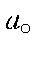

The fundamental physical constants used in MOPAC were updated in 1993 to conform with the 1986 CODATA recommendations [71]. The constants used in MOPAC are given in the Table. As a result of this update, all calculated quantities in MOPAC, except molecular weight, will change slightly when compared to earlier MOPACs (MOPAC 6 and earlier). Most of the time, changes in ΔHf are less than 0.1 kcal/mol. It is not anticipated that the physical constants will change again. If they do, however, the effect on calculated properties should be very small.
The derived quantities, AM, AD, AQ, EISOL, DD, and QQ are functions of the fundamental constants. Rather than change all of these, they are evaluated at the start of each calculation. This is a quick operation, taking only about 0.1s, and prevents any mistakes being introduced due to human error.
Table:
Fundamental Physical Constants|
Physical Constant |
Symbol |
Value |
Units |
|
Speed of Light |
c |
299 792 458 |
m sec-1 (Definition) |
|
Planck constant |
h |
6.626 075 5(40) x10-34 |
J sec |
|
|
|
6.626 075 5(40) x10-27 |
erg s |
|
Avogadro constant |
N |
6.022 136 7(36)x1023 |
mol-1 |
|
Molar gas constant |
R |
1.987 215 6 |
cal/mol/degree |
|
|
|
8.314 510(70) |
J/mol/K |
|
Volume of 1 mol of gas |
V0 |
22.414 10(19) |
l/mol (at 1 atm, 25 C) |
|
Electron volt |
eV |
1.602 177 33(49)x10-19 |
J |
|
Electron charge |
e |
1.602 177 33(49)x10-19 |
C |
|
Hartree |
Eh |
27.211 396 1(81) |
eV |
|
Electrostatic energy |
Ehao |
14.399 651 782 565 |
eV |
|
Bohr radius |
 |
0.529 177 249(24)x10-10 |
m |
|
Boltzmann constant |
k = R/N |
1.380 658(12)x10-23 |
J/K |
|
|
|
1.380 658(12)x10-16 |
erg/K |
|
pi |
π |
3.141 592 653 589 79 |
|
|
Joule |
J/cal |
4.184 |
J/cal (Definition) |
|
cm-1 |
hc/eV |
1.239 842 4x10-4 |
eV |
|
cm-1 |
hcN/(1000J/cal) |
2.859 144x10-3 |
kcal/mol |
|
cm-1 |
hcN/(J/cal) |
2.859 144 |
cal/mol |
|
cm-1 |
|
1.196 266x108 |
erg = dyne Å-1 |
|
Atomic unit (a.u.) |
|
8.657 10x10-33 |
e.s.u. |
|
a.u. |
|
2.541 747 8x10-40 |
Debye |
|
a.u. |
|
51.422 082 |
V m-1 |
|
kcal/mol |
|
6.947 700x10-13 |
erg |
|
1 J |
|
1.x107 |
erg |
|
1 eV |
|
23.060 542 301 389 |
kcal/mol |
|
1a.u. |
|
627.509 6 |
kcal/mol |
|
1 atm |
|
1.013 25x105 |
Pa |
|
|
|
1.013 25x106 |
dyn/cm2 (Definition) |
Note: The precision of derived constants should not be used as an indication of their accuracy.
The uncertainty in the fundamental constants is given in parenthesis after the value.